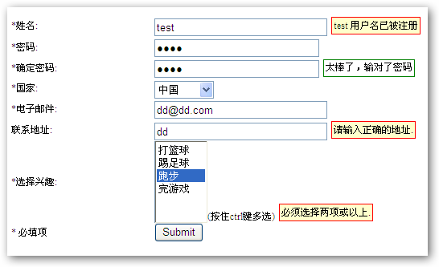
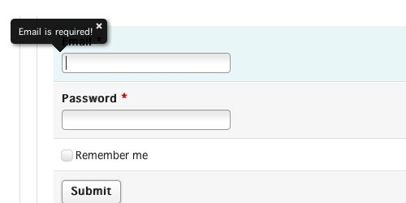

绝大部分网站都是开放注册的，而注册就需要使用表单验证，因为网站都需要对注册用户的信息安全性和合理性做出判断，表单的注册都应该具备完善的验证方式，比如注册使用的手机号是否是真实的？用户填写的验证码是否正确？如果我们自己写一个通用的没有bug的强大的jquery表单验证插件并不轻松又耗时间，但是使用一些jquery插件就可以轻松完成表单验证。网上搜一搜就有很多jquery表单验证插件的下载资源，下面就给你推荐一些w3cschool搜集的jquery表单验证插件下载资源。
1、jValidate
jvalidate 是一款自写的基于jQuery的无刷新表单验证插件，纯JavaScript版本的插件有时候用着不方便，这是一位网友根据其它资料修改移植而来的全新表单验证插件，它的验证规则方式也许会让你眼前一亮，觉得有用的朋友请下载参阅。

2、Zebra Form

3、 jQuery.validVal
jQuery.validVal插件旨在简化表单验证功能。此插件可用于任意的HTML表单（包括Ajax异步加载的），通过定义各种验证规则实现表单的验证功能。

4、Validity
Validity是一个强大灵活的jQuery表单框架，可实现客户端和服务器端同时验证。它只有9KB大小，能够执行各种简单或是复杂的验证，包括动态的或设定条件的验证。该插件还可以控制验证信息将如何显示，使其与网站的外观/风格相适应。

5、ValidForm Builder
ValidForm Buider是一个简单的、使用XHTML 1.0和CSS的Web表单生成工具。它是一个开源的PHP和JavaScript（jQuery）库，非常不错，可快速安全地制作出专业的Web验证表单。

6、Form Validator
功能广泛的表单验证方案，适用于任何表单。验证失败时将弹出浮动错误提示。

7、 Progression
Progression是一个能够提示用户表单填写完成百分比进度的jQuery表单插件。这款jQuery表单插件十分人性化，而且界面美化的十分漂亮，设计简洁大方。

8、formvalidation
formvalidation是一款功能非常强大的基于Bootstrap的jQuery表单验证插件。该jQuery表单验证插件内置了16种表单验证器，你也可以通过Bootstrap Validator's APIs写自己的表单验证器。

9、jQuery Validation Plugin
jQuery Validation是一个非常容易使用的表单验证下拉式插件，它将验证方法封装在一起，然后允许你使用api接口的方式进行轻松的调用。

10、jQuery Validation Engine
当你使用了jQuery Validation Engine的时候，你无需担心你的表单结构会被验证插件所创建的错误div结构位置所打乱，验证提示的位置只会出现在input指定字段的右上角，因为信息的验证提示与div结构是分开的。

11、jQuery Validate
jQuery Validate 是一个能够帮助你简单快速的完成表单域数据对象验证的插件,是一款十分轻巧的jquery验证插件。

12、Validarium
Validarium是一个基于jQuery Validate简单直观的验证插件,获得了MIT许可。

相关文章
jQuery EasyUI 教程：jQuery EasyUI 表单 - 表单验证